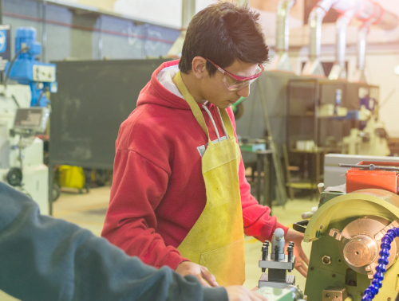
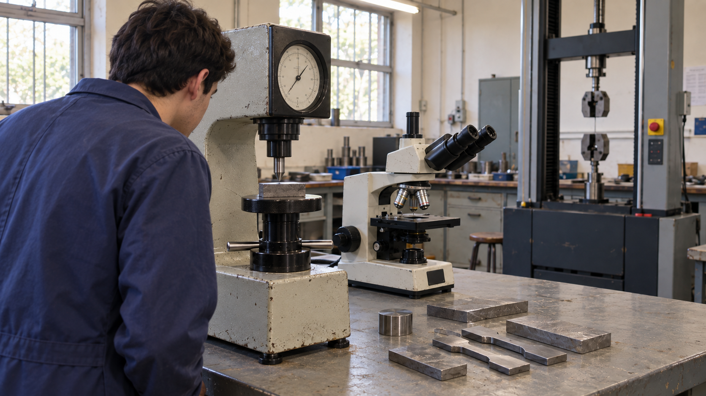
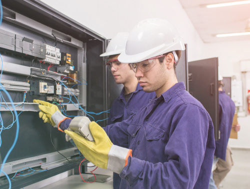

Espacios y equipamiento para aprender haciendo.
Conocé los talleres, laboratorios y recursos destinados
a la formación práctica del ITEC.
El edificio del instituto
La descripción edilicia publicada por el instituto incluye
aulas, talleres, laboratorios, auditorio, sala multimedial
y sala de reuniones, distribuidos en planta baja y cuatro pisos.
Superficie del predio
8.500 m²
Superficie cubierta
4.500 m²
Espacios para distintas funciones
77
Talleres para la formación práctica
Explorá los sectores de trabajo, las actividades formativas
documentadas y el equipamiento publicado para cada uno.

Máquinas y herramientas
Equipamiento para trabajar con operaciones de mecanizado,
perforación, corte y afilado.
Actividades formativas
Interpretación de dibujo técnico aplicado al mecanizado.
Manejo de instrumentos de medición.
Prácticas de mecanizado y manejo de tornos.
Reconocimiento de materiales utilizados en la industria.
Formación relacionada
Formación de Operario Metalmecánico de Nivel Inicial
y recorridos de especialización en arranque de viruta.
Antecedentes formativos publicados por el instituto.
La disponibilidad depende de cada convocatoria.
Carrera con contenidos afines
Mantenimiento Industrial incluye Mecánica,
Elementos de Máquinas y Mecanismos
y Tecnologías de los Materiales.
Conocé las áreas de experimentación, medición y aplicación
de tecnologías. Las carreras enlazadas incluyen contenidos
afines a las temáticas de estos espacios.

Ensayos
Instrumentos para estudiar propiedades de los materiales,
medir su dureza y observar sus características.
Aplicaciones del equipamiento
Evaluación del comportamiento mecánico de materiales
mediante una máquina universal de ensayos.
Medición de dureza con distintos tipos de durómetros.
Preparación de muestras mediante pulido metalográfico.
Observación ampliada y comprobación de perfiles de piezas.
Formación relacionada
Mantenimiento Industrial incluye Tecnologías de los
Materiales, vinculada con el estudio de materiales
utilizados en la industria.
Calibres pie de rey y de profundidad, mecánicos y digitales.
Micrómetros exteriores, mecánicos y digitales.
Micrómetros interiores, de profundidad, de platillos y para tubos.
Alesámetros y calibre centi-meter.
Comparadores mecánicos y digitales.
Goniómetros y escuadras combinadas.
Espesímetros y galgas de roscas.
Plantillas de radios y para afilado de herramientas.
Pirómetro y tacómetro digitales.
Reglas metálicas y puntas de trazado.
Prismas magnéticos.
Bases portamicrómetros y magnéticas articuladas.
Software de control estadístico de procesos.

Electricidad y electrónica
Recursos para prácticas de medición, control
y automatización de sistemas eléctricos.
Actividades formativas
Ejercitaciones y resolución de problemas de electricidad industrial.
Prácticas con componentes e instrumentos de medición.
Estudio de sistemas de control mediante relés y PLC.
Formación relacionada
El proyecto de Aula Taller de Mantenimiento Industrial
presentado en 2024 contempló prácticas para tecnicaturas
y cursos de Fundamentos de Electricidad, Electricidad
Industrial y Sistemas de Control.
El plan de Mantenimiento Industrial incluye Electrotecnia,
Instalaciones y Máquinas Eléctricas
y Automatización y Control.
La planta piloto de biodiésel forma parte
de las instalaciones incluidas en la presentación
institucional de infraestructura y equipamiento.
Antecedentes de formación
En octubre de 2022, el ITEC fue sede del ciclo
Formación en Biocombustibles, con encuentros
presenciales y virtuales sobre producción,
uso de biodiésel y transición energética.
Temas abordados en la capacitación
Beneficios de la producción y el uso de biocombustibles.
Reducción del impacto ambiental y de la huella de carbono.
Experiencias de implementación de proyectos de biocombustibles.
Carrera con contenidos afines
La tecnicatura en Gestión de Energías Renovables,
Uso Racional y Eficiencia Energética incluye
Energía de Biomasa en su plan de estudios.
El instituto incluye un laboratorio de Informática
de Gestión entre sus espacios de formación,
junto al laboratorio de Diseño Asistido por Computadora.
Formación relacionada
Gestión Industrial incluye Informática y Sistemas
de Información para la Gestión de Empresas.